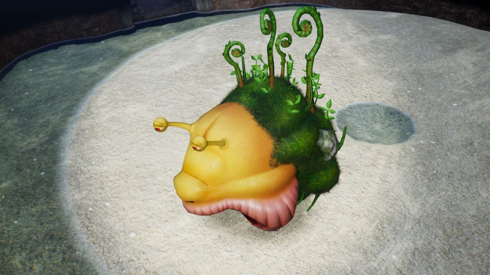
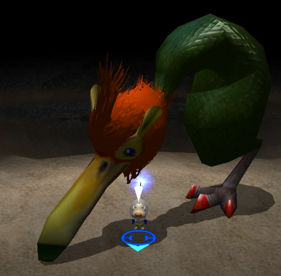

Louie's top 3 favorite dishes from PNF-404
Written by Louie
This List shares some of favorite dishes I've eaten in my time of exploring the harsh planet of PNF-404. These dishes where some of the highlights on my journey of exploring the harsh planet.
3. Bullborb
Most Bullborbs have large a quantity of fat, making them ideal for spit roasting whole stuffed with lime and bacon. Make sure that you continuously baste it to ensure that the meat is juicy and tender, and it will be one of the most delicious meal you will ever have. The meat is pretty easy to source and is excenllent for when you are serving multiple people.
2.Emperor Bulblax

The tougue is excellent in a stew when choped into cubes and then seared in olive oil. Proceed to add the tougue to a pot with carrots, potatoes, and chives and simmer over low heat for several hours. Accompany this delicious, heavy, soothing and hot stew with a hearty bread roll. this dish is fantastic and great for any ocasion but esecially good for when you are navigating the freezing teperatures of the Frozen Tundra.
1. Pileated Snagret
